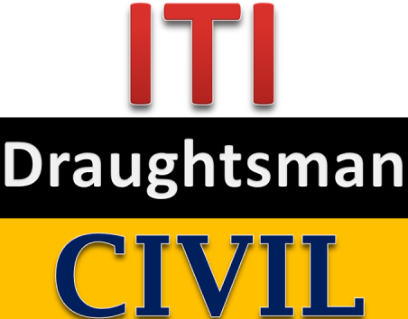

ITI Fitter is a short term professional technical course, In which you are taught about different types of fittings. It is a mechanical branch in which you are given the knowledge to fit different types of machines, pipes, structures.
Computer
A computer course focuses on core computer topics such as computer hardware, software, applications, and computer elements.

Civil
Draughtsman(Civil) is an art vocational trade,and the course is designed to provide a drawing of projects,it helps to get visual guidelines and showing the technical details.
Mechanical
Draughtsman (Mechanical) ITI is an art vocational trade. The program is all about mechanical drawing that shows details of machinery and mechanical tools and devices.
Electrician
Executing plans of electrical wiring for well functioning lighting, intercom and other electrical systems.
Welder
Welders fabricate and assemble metal structures and equipment through the use of welders, cutters, shapers and measuring tools. Welders produce metal products according to customer or employer specifications.
Fireman
ITI in Firemen is a job oriented vocational course. The primary role of the Fireman is to rescue & mitigate emergency and control fire situations by using appropriate fire-fighting equipment and safety devices
Surveyor
This course is a professional course that provides knowledge of measuring land and plots. This course teaches the basics of topographical mapping and survey drawing using CAD.